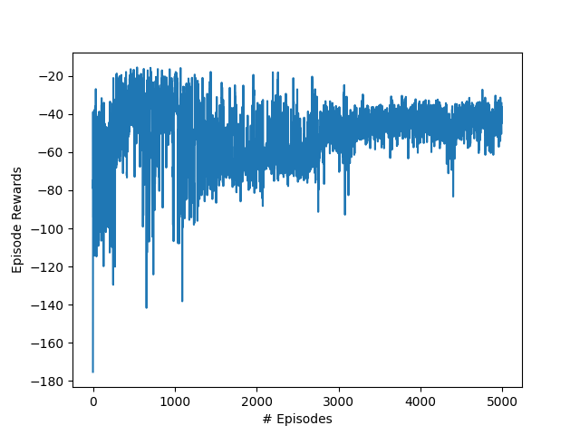
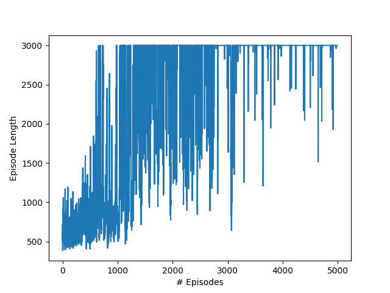
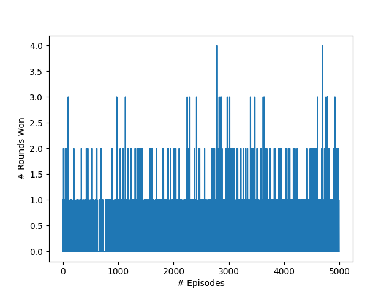

Actor-Critic Slime Volleyball
August 2022

This project was my solution as part of the University of Waterloo ECE 457C assignment coursework.
Introduction
In this project, the actor-critic reinforcement learning method was applied to the slime volleyball environment - a simple 2D game in which two agents compete in order to bounce a ball in the opponent’s half of the court. The state of the environment, \(S_t\), is a 12-dimensional vector representing the X and Y positions and velocities for both players as well as the ball at time step \(t\). The agent can take one of three possible actions at a given state, where each action corresponds to the travel direction - jumping up, moving left, or moving right. The dynamics of the environment are deterministic with respect to the agent’s action. For example, if an agent is currently at the position, \((x,y)\) with no velocity, and the agent takes the action to move to the right, then the dynamics are \(p(s^\prime = (x+distance, y, ...) | s = (x, y, ...), a = right) = 1\).
Advantage Actor-Critic
The algorithm used for this project was the actor-critic method, specifically using the advantage actor-critic variant. This method involves implementing both an explicit representation of the policy, called the actor, as well as an estimated value function,
called the critic. In this project, a deep neural network with a shared feature backbone and two output heads, denoting the actor and the critic, was built using PyTorch to parameterize the policy and state-value functions. The actor network
aims to predict the optimal action to take for a given state, while the critic network aims to predict the TD error for the policy taken by the actor. During the back-propagation step, the actor learns to take actions that are favored
by the critic network, while the critic network learns the value, \(V(s)\), for a given state.
First, the actor selects an action using the current policy based on the current state. \[a' = argmax_{a'} \pi_{\theta}(a'|s) \] Next, the parameters of the policy are updated based on the TD error, \(r - V(s)\), at time t. Where
\(V(s)\) is estimated using the critic network. \[min_{\theta} TDError \cdot -log \pi_{\theta}(a'|s) \] The actor-network uses an optimizer, in this case, "Adam", to update its parameters in order to minimize the above loss function. The
advantage actor-critic method aims to encourage the actor-network to take actions that were better than expected; for example, if the reward for a given state was higher than the estimated state-value \(V(s)\) predicted, then the TD error
will be positive and thus the loss will be lower - reinforcing the action taken by the actor-network.
The critic-network parameters are then updated by minimizing the TD error associated with the critic network's state-value \(V(s)\)
predictions. Where the loss function used is a smooth L1 function for the TD error. \[min_{\theta} |r - V(s)|_{1} \]
Reward Shaping
Often, RL environments by nature have a sparse reward scheme - in which the agent may not receive rewards for several time steps in the episode. This can negatively affect the learning process of the agent due to the lack of signal.
One method used to solve the sparse rewards problem is to use reward shaping - which involves breaking down the main problem into a set of well-defined goals. In the slime volleyball environment, the main problem is to train the agent
to beat the opponent in the game of volleyball; however, an intermediate goal for this environment would be for the agent to learn how to move in the environment to get closer to the ball. In doing so, the agent will learn how to keep
the ball in the air and thus lose fewer points. In order to implement this strategy, supplemental penalties were incurred to the agent proportional to the agent's distance from the ball. Hyperparameters such as the scale of the penalty,
as well as the maximum penalty, were optimized through trial-and-error. \[reward : reward - min(6e-1 \cdot distance, 1)\] However, reward shaping also introduces human bias into the agent's learning process - since a human has broken down
the problem for the agent based on assumptions that may or may not be correct. Thus, methods such as automatic goal generation have been introduced in recent literature in order for the agent to learn a set of well-defined goals on its
own.
Results
The agent was trained for 5000 episodes, with a learning rate of \(3e-2\). These hyperparameters were tuned through trial-and-error based on quantitative evaluation and visual inspection of the results.
Qualitatively, when visualizing
the agent's performance against an opponent, it can be seen that the agent learned over time to control the ball in the air very well, learning how to adapt its movement based on the velocity of the ball. This likely can be attributed
to the supplemental penalties incurred for having a large distance from the ball. However, it's clear the agent does not focus on sending the ball to the opponent's half of the court in order to score more points. This likely occurred
due to the agent finding a loop-hole in the environment - the episode will last for a maximum of 3000 time steps before ending with no additional penalties. Thus, the agent likely learned to keep the ball in the air for the majority of
the episode in order to not lose any points.

Figure 1. Episode rewards over time
Quantitatively, the results from Figure 1. show that the agent is able to optimize the rewards from the environment over time - depicting a slight increase in the rewards over the training process.

Figure 2. Episode length over time
Further, the results from
Figure 2. depict the steep increase in episode length over time - showing that the agent is capable of keeping the ball in the air and returning serves from the opponent.

Figure 3. Rounds won over time
Finally, Figure 3. shows the number of rounds won against the opponent per episode, showing a slight increase in the frequency of rounds being won against the opponent as the agent learns more. However, across all of the episodes,
the agent was not able to beat the opponent for all 5 rounds.
Figure 1. Episode rewards over time
Figure 2. Episode length over time
Figure 3. Rounds won over time